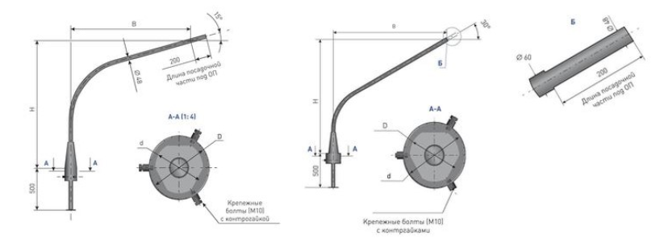
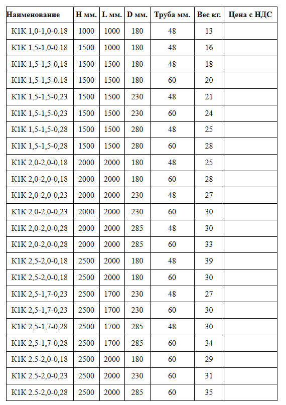
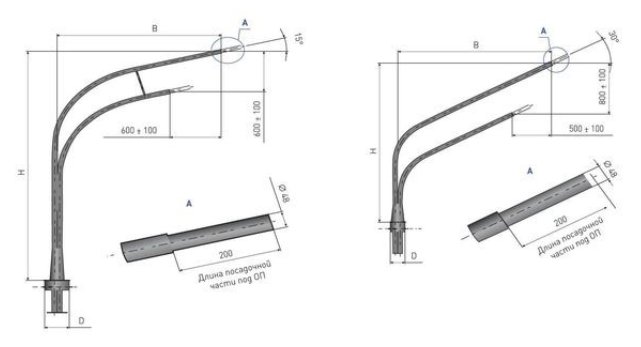
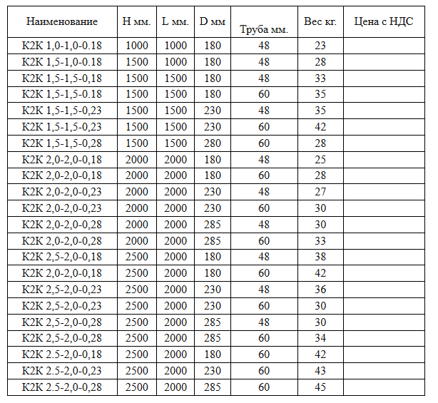
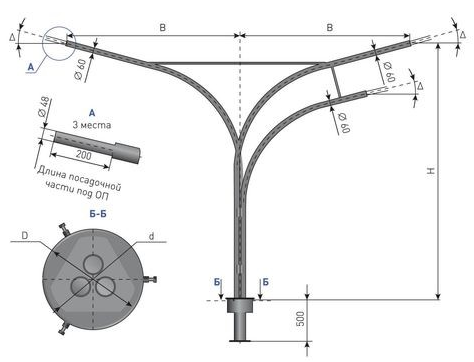
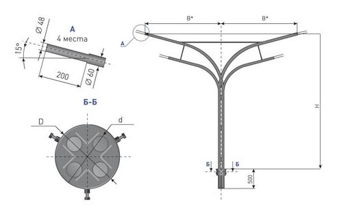
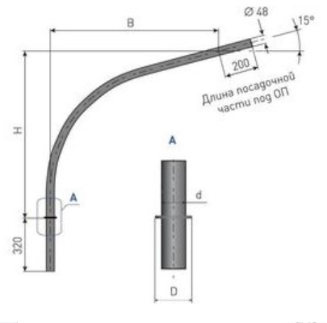
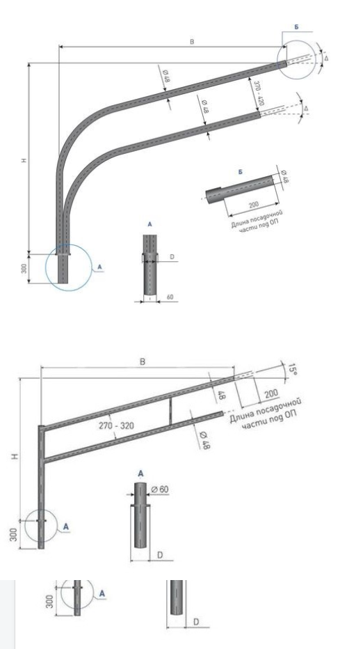
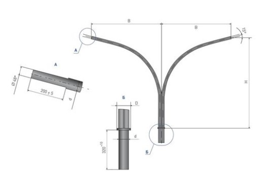

Кронштейны освещения предназначены для установки различных светильников.Кронштейны служат для освещения улиц городов, населенных пунктов, площадей, объектов промышленного и социального назначения. Наша компания производит кронштейны для установки и крепления светильников на опоры освещения различных видов: круглые столбы,опоры шестиугольной и прямоугольной формы; так же производим приставные кронштейны на стену.
Кронштейны освещения предназначены как для воздушного подвода кабеля (СИП), так и внутреннего подвода кабеля.
Кронштейны освещения выполняются из стальных труб с посадочным диаметром 48-60 мм под консольные светильники. На каждый тип опор предусмотрен свой тип кронштейнов.
Кронштейны для опор освещения используются со светильниками типа РКУ, ЖКУ.
Все кронштейны для светильников обработаны методом горячего цинкования по ГОСТ 9.307-89
Порошковое напыление (под заказ) в соответствии с RAL заказчика.
К - кронштейн ;
1- 4 число посадочных мест для светильников;
К, П, Н способ установки кронштейна на опоре (концевой, приставной, настенный);
(30) - значение, в градусах, которые показывают угол наклона посадочных мест относительно горизонтальной плоскости ( это значение равно 15°);
1,5 - расстояние от верхнего конца опоры до посадочного места под светильник;
1,5 - расстояние от оси опоры до посадочного места под светильник ;
0,18 - внутренний посадочный диаметр хомута или обечайки кронштейна для крепления на опору;
0; 60; 90; 180 - угол между осями симметрии посадочных мест под светильники.








